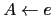

Sig: Práctica: Analizador Descendente Predictivo Sup: Analizadores Descendentes Predictivos en Ant: Esquemas de Traducción Con:
|
|
{ alpha_action } |
|  | { beta_action } |
|
|
{ gamma_action } |
para una sentencia como
 la secuencia de
acciones será:
la secuencia de
acciones será:
gamma_action beta_action alpha_action
¿Cómo construir un esquema de traducción para la gramática resultante de eliminar la recursión por la izquierda que ejecute las acciones asociadas en el mismo orden?. Supongamos para simplificar, que las acciones no dependen de atributos ni computan atributos, sino que actúan sobre variables globales. En tal caso, la siguiente ubicación de las acciones da lugar a que se ejecuten en el mismo orden:
{ gamma_action } |
{ beta_action } |
{ alpha_action } |
|
|
Si hay atributos en juego, la estrategia para construir un esquema de traducción equivalente para la gramática resultante de eliminar la recursividad por la izquierda se complica.